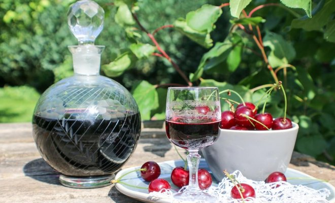
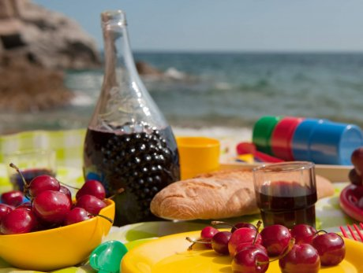
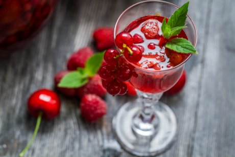
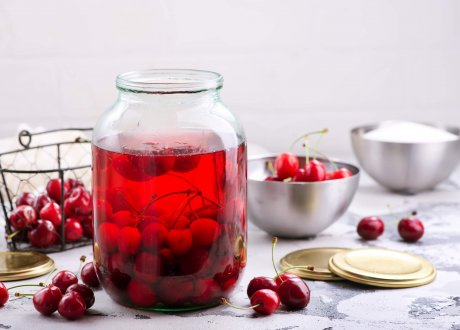
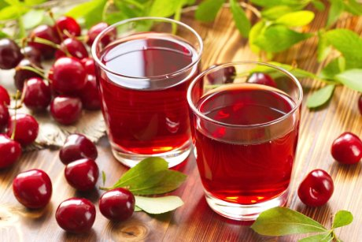
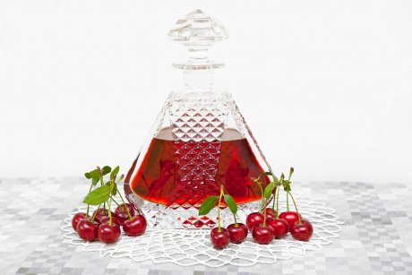

shutterstock.com
Вишня – отличное сырье для любительского домашнего виноделия в наших широтах. Она успешно растет практически на каждом приусадебном участке и проста в обработке, а вино из вишни получается ярким и насыщенным как по вкусу, так и по цвету и аромату.
Домашнее вино из вишни можно приготовить как легким полусухим, так и сладким, десертным или крепленым. Все зависит от технологии его создания и используемого сырья. Считается, что лучшие вина получаются из темноокрашенных сладких и кисло-сладких сортов вишни. Собирать ягоды для вина нужно в сухую погоду, выбирать полностью созревшие и неповрежденные экземпляры. Если наберете недозрелую ягоду – получите очень кислый напиток, если слишком сладкую, мягкую и перезрелую – не добьетесь яркости вкуса и аромата. А заплесневелая или подгнившая ягода даже "единолично" сможет испортить весь объем готовящегося напитка, так что будьте бдительны при сборе сырья.
Все емкости, применяемые в процессе приготовления напитков, должны быть предварительно промыты кипятком и тщательно высушены.
Итак, как же правильно и просто (а главное вкусно) приготовить из вишни домашнее вино, наливку или даже ликер? Записывайте рецепты!
Домашнее вино из вишни

Рецептов домашнего вишневого вина огромное множество – каждая рачительная хозяйка, пожалуй, имеет свой секретный ингредиент или прием для приготовления самого-самого замечательного напитка. К тому же одним по вкусу исключительно сладкие ликерные вина, другие уважают спокойные столовые, третьим подавай покрепче. Поэтому мы собрали для вас лишь несколько самых проверенных рецептов разных видов вишневых вин – а вы уж сами можете на этой классической основе доводить технологию до ума или добавлять по вкусу различные компоненты.
При приготовлении домашнего вишневого вина ради нормального брожения вишню желательно не мыть, чтобы не удалить с кожицы дикие дрожжи.
Часто спрашивают – вишневое вино в домашних условиях нужно готовить с косточками или без косточек? Можно и так, и эдак. Нужно только знать, что вино из вишни с косточками будет иметь небольшой терпкий оттенок горького миндаля – из-за сенильной кислоты, которая находится в ядрышках. В больших количествах она ядовита для человека, однако в косточках ее не такое количество, чтобы она смогла принести вред организму.
Самое простое домашнее вино из вишни (сухое)
Вам понадобятся: 1 кг спелой вишни, 0,5 кг сахара.
Приготовление. Немытую вишню перебрать и, не удаляя косточек, засыпать в стеклянную емкость, послойно пересыпая сахаром. Закрыть крышкой и поставить в теплое место. Периодически перемешивать массу, чтобы сахар быстрее растворился. Через месяц брожения ягоды отжать, жмых выкинуть, а получившееся сусло процедить через плотную марлю и выдержать еще 3-4 дня на солнце. Расфасовать по бутылкам, плотно закупорив, и хранить в холодильнике или погребе.
Вино обычно хранят в горизонтальном положении, чтобы в него была погружена пробка. Такой способ не дает воздуху проникнуть в бутылку и повлиять на качество вина.
Классическое домашнее вишневое вино
Вам понадобятся: 1,5 л воды, 1 кг спелой вишни, 0,5 кг сахара.
Приготовление. Сахар разделить на три равные по объему части. Вишню перебрать, аккуратно удалить плодоножки и косточки. Воду нагреть (не до кипения, чтобы не уничтожить дрожжи!) и залить ягоду, добавив треть заготовленного объема сахара. Все размять, перемешать, завязать горлышко емкости марлей и поместить ее на 3-4 дня в темное теплое место (18-27°C). После начала процесса брожения 2-3 раза в день перемешивать массу, притапливая образующуюся "шапку" из частичек кожицы и мякоти.
Через пару дней процедить забродивший сок через марлю, отжав туда же и жмых (его выкидываем). В жидкость добавить вторую треть сахара, все перемешать до его растворения и перелить в емкость большего размера – примерно ее четверть должна остаться свободной, чтобы осталось место для пены.
Плотно надеть на горлышко емкости тонкую резиновую медицинскую перчатку, проткнув пару "пальцев" тонкой иголкой, и поставить банку в теплое место (18-25°C). В процессе сбраживания ягод перчатка будет надуваться, а избыток углекислого газа – выходить через проколотые отверстия.
Через 4-5 дней добавляем остаток сахара – предварительно растворив его во взятом из емкости небольшом количестве жидкости. Когда процесс закончится (всего брожение домашнего вина идет в зависимости от условий 30-60 дней), жидкость посветлеет, перчатка сдуется и опадет. Молодое вино следует аккуратно, не взбаламучивая осадок, слить в другую емкость и продегустировать – при желании можно подсластить сахаром или закрепить водкой (не более 10% от объема). Затем разлить по бутылкам и плотно закупорить, оставив для дозревания на несколько месяцев в темном прохладном помещении. По мере накопления осадка вино можно фильтровать, чтобы не образовывался горький привкус – первый раз после перефасовки это делают примерно через 20 дней, потом реже.
Добавление крепкого спиртного к домашнему вишневому вину поспособствует его хранению, но поменяет аромат и сделает вкус жестче.
Домашнее вино из вишни с малиной или смородиной
Вам понадобятся: 0,6 л воды, 1 кг спелой вишни, 0,5 кг другой ягоды (предпочтительнее брать малину или смородину), 0,5 кг сахара.
Приготовление. Сахар разделить на три равные по объему части. Немытую вишню и малину перебрать, добавить к ним треть заготовленного сахара, перемешать, накрыть марлей и оставить в теплом помещении на сутки. На следующий день влить в сахарно-ягодную массу теплую воду и опять перемешать. На третий и четвертый день добавлять по одной оставшейся трети сахара.
Ежедневно размешивать бродящую массу, притапливая образующуюся "шапку" и разминая руками оставшиеся целыми ягоды. Через неделю жидкость процедить через марлю в другую, более объемную емкость, отжатый жмых и косточки выбросить.
Плотно надеть на горлышко емкости тонкую резиновую медицинскую перчатку, проткнув пару "пальцев" тонкой иголкой, и поставить банку в теплое место. Когда брожение затихнет, получившееся вино процедить и аккуратно, не задевая осадок, перелить в другую емкость. Через месяц продегустировать и разлить по бутылям, крепко закупорив.

Крепленое домашнее вишневое вино
Вам понадобятся: 0,2 л воды, 1 кг спелой вишни, 0,2 кг сахара, 50 мл спирта, винные дрожжи из расчета 1 пакетик на 10 кг сырья.
Приготовление. Домашнее крепленое вино готовится по вышеописанному рецепту до отжима сусла. После этого к бродящей массе добавляют винные дрожжи, а еще через 10 суток – остатки сахара и спирт. Еще через 2 недели напиток готов – его можно фильтровать и разливать по бутылкам.
Легкое столовое домашнее вино из вишни
Вам понадобятся: 0,6 л воды, 1 кг спелой вишни, 0,6 кг сахара, большая щепотка лимонной кислоты.
Приготовление. Готовится по тому же алгоритму, как и самое простое вишневое вино. Все компоненты смешиваются, бродят несколько недель в теплом месте, готовое вино процеживается и разливается по бутылкам.
Домашнее вишневое вино из забродившего компота
Вам понадобятся: 3 л забродившего вишневого компота, 0,5 кг сахара, горсть изюма.
Приготовление. Компот процедить через марлю, добавить сахар и изюм. Плотно надеть на горлышко емкости тонкую резиновую медицинскую перчатку, проткнув пару "пальцев" тонкой иголкой. Далее – действовать по вышеописанной схеме.
По этому же принципу готовится вино из вишневого варенья (на 1 л варенья без косточек берется 1 л теплой воды и горсть изюма) или вишневого сока (на 3 л сока берется 500 г закваски, 0,5 кг сахара и немного спирта).
Домашняя наливка из вишни

Наливка – это сладкий фруктово-ягодный спиртной напиток крепостью около 20%. Из вишни с добавлением алкоголя, воды, сахара и лимонного сока в домашних условиях можно приготовить несколько видов среднеспелых наливок, которые будут готовы к употреблению уже через полтора-два месяца.
Простая наливка из вишни на водке
Вам понадобятся: 1,5 л водки, 1 кг спелой или замороженной вишни, 0,3 кг сахара.
Приготовление. Вишню промыть, не удаляя косточки. Ягоды поместить в стеклянную емкость и залить водкой. Плотно закрыть емкость и на 2 недели отправить в темное прохладное место, периодически помешивая. По истечении этого времени жидкость перелить в другую емкость, а оставшиеся ягоды засыпать сахаром и оставить в темном прохладном месте еще на 2 недели, регулярно аккуратно перетряхивая раз в 2-3 дня. После всех этих процедур смешать первоначальный алкогольный настой и сироп, получившийся после отжимания через несколько слоев марли сахарно-ягодной массы. Отстоять несколько дней до выпадения осадка, профильтровать и разлить вишневую наливку по бутылкам. Желательно до употребления выстоять напиток еще пару месяцев.
В принципе, все описанные далее домашние наливки, настойки и ликеры можно употреблять сразу после настаивания или введения сахарного сиропа. Однако знатоки категорически не рекомендуют этого делать – напиток должен "выдержаться", сбалансировать вкус. Поэтому наберитесь терпения!
Вишневая наливка без водки
Вам понадобятся: 0,1 л воды, 1 кг спелой вишни, 0,4 кг сахара.
Приготовление. Вишню промыть и, не удаляя косточек, засыпать в стеклянную емкость, перемежая каждый слой ягод слоем сахара. Добавить воду, проследив, чтобы до верха емкости осталось немного свободного места. Содержимое слегка размять, чтобы ягода пустила сок. Плотно надеть на горлышко емкости тонкую резиновую медицинскую перчатку, проткнув пару "пальцев" тонкой иголкой, и поставить банку в теплое место. В процессе сбраживания ягод перчатка будет надуваться, а избыток углекислого газа – выходить через проколотые отверстия. Когда процесс закончится, перчатка сдуется и опадет. После этого наливку нужно профильтровать, дать постоять пару дней и профильтровать вторично. Разлить по бутылкам и хранить в погребе или холодильнике до трех лет.
Домашняя вишневая наливка пряная
Вам понадобятся: 1,5 л спирта или самогона, 1 кг спелой вишни, 0,4 кг сахара, специи по вкусу: гвоздика, корица, мускатный орех и т.п.
Приготовление. Вишню промыть и, не удаляя косточек, засыпать в стеклянную емкость, перемежая каждый слой ягод слоем сахара и проследив, чтобы до верха емкости осталось немного свободного места. Содержимое слегка размять, чтобы ягода пустила сок, горлышко банки завязать слоем хлопчатобумажной ткани и оставить на неделю в теплом месте. Через неделю, в разгар процесса брожения, залить содержимое алкоголем, добавив любые подходящие специи. Настаивать еще 2 недели, затем процедить и профильтровать. Разлить по бутылкам и выдержать до полного созревания еще пару месяцев.
Наливка из вишни с коньяком и ромом
Вам понадобятся: 0,7 л фруктового бренди или коньяка, 0,3 л рома, 1 кг спелой вишни, 0,5 кг сахара.
Приготовление. Вишню промыть, из половины ягод удалить косточки, засыпать в стеклянную емкость, перемежая каждый слой ягод слоем сахара. Содержимое слегка размять, чтобы ягода пустила сок, горлышко банки завязать слоем хлопчатобумажной ткани и оставить на несколько дней в теплом месте до растворения сахара. Как только начнется процесс брожения, залить содержимое алкоголем, хорошо перемешать и настаивать еще 1 месяц, затем процедить и разлить по бутылкам. Выдержать до полного созревания не менее 5-6 месяцев.
Домашняя настойка из вишни

Настойка – алкогольный напиток на основе любых плодов, косточек, душистых трав, кореньев или специй, на которых продолжительное время настаивается спиртосодержащая жидкость. Разумеется, можно приготовить настойку и из вишни, по желанию придавая ей различные вкусовые оттенки. Это можно сделать, добавляя в напиток специи, сахар и разный алкоголь. К тому же саму вишню можно брать не только спелую или замороженную, а еще и подвяленную – такие ягоды облагородят вкус напитка. Чтобы их приготовить, достаточно свежую вишню выложить на 3-4 дня на яркое солнце или подержать несколько часов в несильно разогретой духовке.
Вишневая настойка горькая
Вам понадобятся: 0,5 л спирта или водки, 1 кг спелой вишни.
Приготовление. Вишню засыпать в стеклянную емкость, залить алкоголем и накрыть. Содержимое должно заполнять емкость "под завязку", так, чтобы под крышкой не было окисляющей прослойки воздуха. Настаивать не менее полутора месяцев (лучше 2-3 месяца), раз в несколько дней аккуратно встряхивая. По истечении срока процедить и разлить по бутылкам.
Можно усложнить рецепт – приготовить и смешать сразу несколько настоек вишни, каждая из которых выдерживается на 10-15 дней больше предыдущей. Говорят, такое смешение придает настойке особенный пикантный вкус.
Вишневая настойка на коньяке
Вам понадобятся: 1 л фруктового бренди или коньяка, 1 кг спелой или замороженной вишни, 150 г сахара, специи по вкусу: гвоздика, корица, мускат, имбирь и т.п.
Приготовление. Вишню промыть, обсушить, надрезать каждую ягоду и засыпать в стеклянную емкость. Залить половиной объема приготовленного коньяка, плотно закрыть и оставить настаиваться в темном прохладном месте 1 месяц. После этого настойку отфильтровать, добавить оставшийся алкоголь и сахар, хорошо все размешав. Поставить в холодильник до полного осветления напитка.
Пряная настойка из вишни на водке
Вам понадобятся: 0,5 л водки или спирта, 1 кг спелой или замороженной вишни, 100 г сахара, специи по вкусу: гвоздика, корица, мускат, имбирь и т.п.
Приготовление. Вишню промыть, обсушить (можно подвялить), надрезать каждую ягоду и засыпать в стеклянную емкость, перемежая каждый слой ягод слоем сахара со специями. Залить приготовленной водкой, завязать горлышко хлопчатобумажной тканью и оставить настаиваться в солнечном месте 2 месяца, раз в несколько дней перемешивая содержимое. После этого настойку процедить через несколько слоев марли и разлить по бутылкам.
Домашний ликер из вишни

При упоминании вишневого ликера большинство из вас вспомнит итальянский Amaretto (Амаретто) с миндальным ароматом, а сведущие люди назовут еще португальский Ginjinha (Жинжинья) и американский Southern Comfort Bold Black Cherry. Но знаете ли вы, что и в домашних условиях вы сможете приготовить этот ароматный алкогольный напиток?
Вообще ликер готовится из настоя на алкоголе фруктов и ягод с добавлением сахарного сиропа, душистых трав, пряностей, корений и тому подобного. Домашним ликером из вишни обычно называют уже описанную нами вишневую настойку на крепком алкоголе – просто с большей добавкой сахара. Также можно добавлять в напиток в процессе приготовления другие фрукты и ягоды или несколько видов спиртного. Вот вам несколько рецептов:
Домашний ликер вишневый классический на спирте
Вам понадобятся: 1 л пищевого спирта, 1 кг спелой вишни, 1 кг сахара, 0,5 л воды.
Приготовление. Из промытой свежей или размороженной вишни достать косточки, мякоть размять и поместить в стеклянную банку. Часть косточек раздробить и добавить к мякоти. Залив содержимое спиртом, плотно закрыть емкость и на 2-3 недели отправить ее в темное прохладное место. Затем процедить через марлю и залить охлажденным сахарным сиропом (сахар разводится в воде и, помешивая, на медленном огне нагревается до полного растворения). Выдержать полученную смесь не менее месяца.
Домашний ликер из вишни на водке
Вам понадобятся: 2 л водки, 1 кг спелой вишни, 1 кг сахара.
Приготовление. Вишню промыть и каждую ягоду надрезать до косточки. Поместить ягоды в стеклянную емкость и засыпать сахаром. Не перемешивая, залить водкой. Плотно закрыть емкость и на 2-3 месяца отправить ее в темное прохладное место. Процедить через пару слоев марли и разлить по бутылкам.
Домашний кислый ликер из вишни (сауэр) с коньяком
Вам понадобятся: 1 кг кислой вишни, 1,2 кг сладкой вишни или черешни, 1 л водки или спирта, 0,6 л фруктового бренди или коньяка, 0,5 л сахарного сиропа.
Приготовление. Сладкую вишню промыть, обсушить и размять в емкости с сахарным сиропом. Добавить размятую кислую вишню и оба вида алкоголя, тщательно размешать. Плотно закрыть емкость и на 1 неделю отправить ее в темное прохладное место. Процедить через пару слоев марли и разлить по бутылкам. Желательно до употребления выстоять напиток еще пару месяцев.
Домашний вишнево-мятный ликер
Вам понадобятся: 1 кг вишни, 20 листиков свежей или 3 ст.л. сушеной мяты, 1 л водки или спирта, цедра половины лимона, 200 г сахара.
Приготовление. Промыть вишню и удалить косточки. Мякоть слегка размять и поместить в стеклянную емкость. Туда же добавить штук 20 раздробленных вишневых косточек. Добавить сахар, мяту, лимонную цедру и алкоголь. Плотно закрыть емкость и на 1 неделю оставить ее на солнце, а затем на 1 месяц отправить в темное прохладное место. Процедить через пару слоев марли и разлить по бутылкам. Желательно до употребления выстоять напиток еще пару месяцев.
Как видите, при наличии совершенно небольшого количества доступных каждому ингредиентов в домашних условиях вы можете приготовить массу вкусных и ароматных напитков на основе вишни. А у вас есть любимые, проверенные временем рецепты вишневого вина и наливок? Может, поделитесь в комментариях?